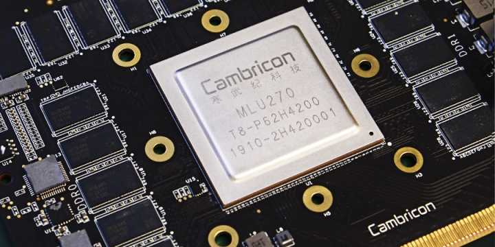
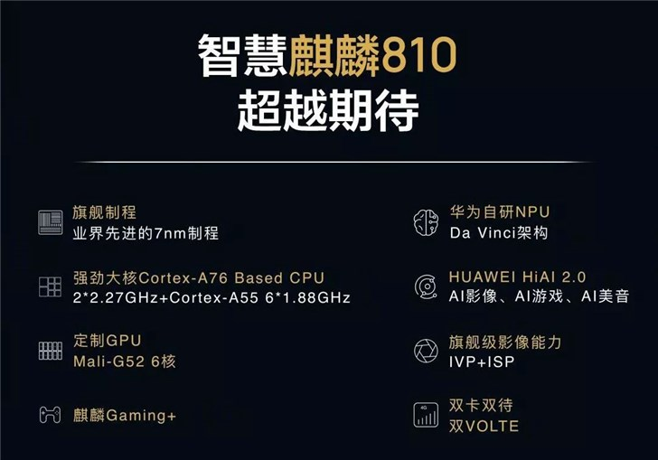
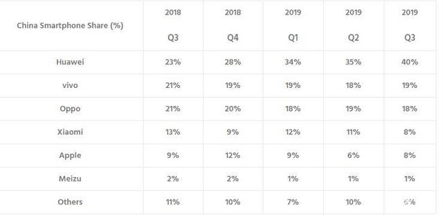
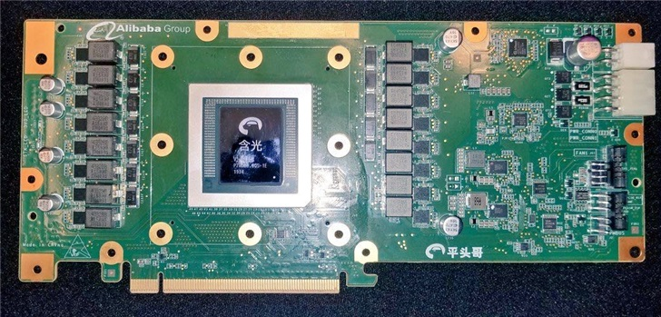

寒武纪IPO，AI芯片创业者的第2春还远吗？
Alan Liu, .
2020年2月28日，中国证监会发布了AI芯片初创公司寒武纪（中科寒武纪科技股份有限公司）的科创板上市辅导信息，中国AI芯片第一股正式启动IPO流程。
国内AI芯片行业经历了2018-2019资本的盛宴、架构的爆炸、概念的狂欢，开始回归商业的本质。寒武纪为何选择在宏观经济下行的时间点IPO？寒武纪将会成为AI芯片里程碑上的先驱还是先烈？上游算力企业该如何交出一份满意的市场答卷？

图片来源：中国证券监督管理委员会
AI国家队的造芯之路
2016年3月寒武纪抱着中科院的金钥匙成立。成立之初，寒武纪便推出了业界首款移动端商用深度学习专用处理器Cambricon-1A。Cambricon-1A应用于华为麒麟970芯片组，此后2年寒武纪都是华为手机重要的NPU芯片供应商。
2017年10月中科曙光推出搭载20个寒武纪MLU系列深度学习推理芯片的Phaneron服务器，寒武纪完成了移动端到云端的AI芯片布局，并在2018年5月正式发布MLU100/MLU200系列云端芯片，分别面向深度学习推理和训练场景。
2017年11月寒武纪一次性推出3款移动端AI芯片：面向低功耗视觉AI场景的Cambricon 1H8处理器、通用型高性能移动端AI芯片Cambricon 1H16和面向自动驾驶的AI芯片Cambricon 1M。
2019年6月寒武纪推出第二代云端AI芯片MLU270 S4和MLU270 F4，分别面向数据中心和非数据中心的深度学习推理场景。11月，推出了边缘计算AI芯片MLU220。至此，寒武纪完成了云、端、边的AI产品布局。
寒武纪成为芯片界屈指可数的集IP、ISA、芯片、板卡4项能力于一身的AI芯片公司，展现了强悍的技术实力，但是产业链过度延伸也为寒武纪商业化埋下了隐患。相比之下，ARM专攻IP和ISA，高通和Nidia则主打芯片设计。
图片来源：寒武纪
成立4年，4轮融资，寒武纪估值从1亿美元增长到超过25亿美元。寒武纪成立以来的每一轮融资都少不了国有资本的身影，创始人也曾公开表示只考虑中国国内资本，最终在A股IPO，AI国家队名副其实。
2016年寒武纪获得中科院旗下基金和联想创投等的1000万美元天使轮融资，估值1亿美元。2016年8月，获得科大讯飞、元禾原点、涌铧投资的数千万人民币的Pre-A轮融资。
2017年8月寒武纪获得国投创业、阿里巴巴、联想创投等资本的1亿美元A轮融资，估值达到10亿美元。
2018年，寒武纪获得中国国有资本风险投资基金和招银国际等领投的数亿美元B轮融资，估值达到25亿美元。
寒武纪IPO的估值虽然还未对外透露，但是超过25亿美元是必然的。

数据来源：投资界
互联网没有永恒的朋友
IP是把双刃剑。
2019年6月华为发布麒麟810芯片，搭载华为自研的DaVinci架构NPU，全面弃用寒武纪NPU。而此前连续华为连续2款高端芯片麒麟980/970均搭载寒武纪NPU。从AI Benchmark测试成绩来看，麒麟810的AI性能更是比搭载寒武纪NPU的麒麟980高近30%。寒武纪彻底失去了核心客户。
图片来源：IT之家
2016-2018年华为的多款主力机型，如Mate20、Mate10、P20、P10、荣耀Magic2等均搭载寒武纪NPU。华为为寒武纪贡献了至少10亿人民币的营收。失去华为对寒武纪的冲击远不止损失1个核心客户这么简单，实际上是宣告寒武纪在手机移动市场的全面出局。小米与高通强绑定，OPPO和Vivo依赖高通和连发科的成套SoC解决方案。除了华为，国内前5的手机厂商都不具备AI芯片定制和整合的能力，寒武纪失去了手机TOP5厂商合计超过90%的市场份额。
华为利用寒武纪的先发优势加速AI自研能力，蜜月期过后，寒武纪已经不再有值得华为青睐的价值，出局是必然。
数据来源：Counterpoint Research
移动端前景黯淡，云端市场也不乐观。云端AI市场规模巨大，并且保持持续高速增长，但是头部厂商越来越具备垄断优势。AI训练芯片Nvidia一家独大，通用AI推理算力则集中在Google、微软、阿里、腾讯等头部公有云厂商。Google早在2016年就发布自主设计的TPU，阿里2019年也发布了自研的云端NPU含光800，腾讯和百度则跟Nvidia强绑定。
图片来源：IT之家
软硬一体化交付中台，AI芯片创业公司的救命稻草
寒武纪们的未来在哪里？ DSA领域专用架构是必然的方向。深度学习和图计算等技术带领AI产业实现了质的飞跃，但是通用AI能力离我们依然遥不可及。我们需要聚焦行业垂直领域，以简化AI芯片的设计架构，这样可以实现领域专用算法和模型的性能、功耗和成本的优化。我们都知道，IT软件和硬件的通用性越差，性能越容易优化，我们可以用ASIC芯片等更高效的硬件架构来设计DSA芯片。视觉AI厂商们已经开始设计图像专用的推理芯片进行数亿和数十亿数量级的人脸识别和车辆识别，智慧城市领域也已经在利用专用AI芯片实时并行处理数千路数量级的高清视频流。而早先这些业务都是通过Nvidia GPU和Intel CPU以低效和高成本的方式完成。
图片来源：Pexels
不同于Nvidia GPU和Google TPU等通用深度学习芯片在指令和算子进行底层优化，DSA芯片是通过模型、算法，甚至应用层面等更高维度结合领域知识进行性能优化。芯片行业需要制定全新的Benchmark测试基准来衡量DAS芯片的算力和能效比。DSA芯片比通用AI芯片与应用集成得更紧密，应用碎片化情况比较严重，每1种新应用都要适配全新的硬件API，应用开发和交付工作量会线性增加，规模效应不明显。这方面通用AI芯片处理得就很好，所有跑在Nvidia GPU的软件都使用的同一套API。
幸运的是我们有非常多的AI框架可以衔接应用和芯片，比如Google的Tensorflow、Facebook的PyTorch、阿里巴巴的X-Deeplearning、百度的Paddle等等。阿里巴巴开源的X-Deeplearning面向广告、搜索、推荐等高维稀疏数据场景，Tensorflow、Pytorch等面向图像、语音等低维稠密数据不足的场景。AI开发框架和DSA芯片深度融合为应用开发者提供一体化的交付环境，可以让DSA芯片的算力发挥最大效能。
AI芯片产业下沉的新机遇
边缘计算和IoT促进了低功耗经济型AI芯片市场的繁荣。AI的行业壁垒、技术壁垒和生态壁垒在IoT领域都基本不存在，IoT AI芯片这个赛道上，Nvidia、高通、Google和初创公司都在同一起跑线。DSA跟边缘计算和IoT非常贴合。AI芯片公司通过开发者大会、开发者论坛、挑战赛等活动建立应用开发者生态，联合高校和教育机构培养未来的行业开发者，能够在这个领域取得不错的市场份额。
产业园区是一片尚未开发的AI芯片处女地。产业园区富集了一大批小型互联网公司和ISV公司，创新有余而技术不足，这些企业得不到Nvidia等芯片巨头的支持，产业园区本身的AI能力又不足，是AI芯片小公司很好的突破点。
私有云、边缘计算、IoT和行业OEM/ODM市场依然有足够的市场体量和平等机会，错过这波红利，AI芯片将不再有机会。
图片来源：Pexels